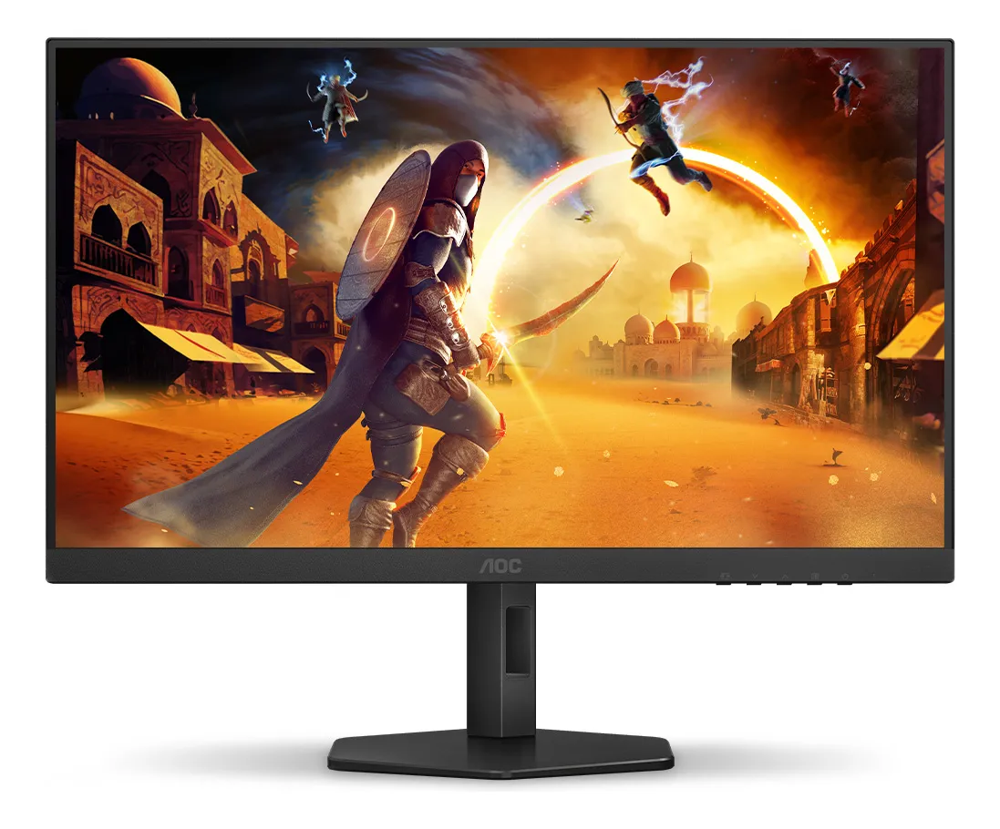

Monitor Gamer AOC 27" 27G4/P 180Hz IPS Full HD
DESCRIÇÃO DO PRODUTO
O Monitor Gamer AOC 27G4/P de 27 polegadas é a escolha perfeita para gamers que buscam desempenho profissional. Com taxa de atualização de 180Hz e tempo de resposta ultrarrápido de 0,5ms, você terá vantagem competitiva em qualquer jogo.
Equipado com painel IPS Full HD (1920x1080), este monitor oferece cores mais precisas e ângulos de visão superiores, garantindo imagens vibrantes e nítidas em qualquer ângulo.
Com altura ajustável, inclinação reclinável e montagem VESA, você pode posicionar o monitor de forma ergonômica para longas sessões de jogo com máximo conforto.
🎮 Especificações Técnicas:
- Modelo: 27G4/P
- Tamanho da tela: 27 polegadas
- Tipo de painel: IPS (In-Plane Switching)
- Resolução: Full HD (1920 x 1080 pixels)
- Taxa de atualização: 180Hz
- Tempo de resposta: 0,5ms (MPRT)
- Cor: Preto
- Voltagem: Bivolt (127V/220V)
- Tecnologia de tela: LED
- Brilho: 300 cd/m²
- Contraste: 1000:1 (típico)
- Ângulo de visão: 178° (H) / 178° (V)
🔌 Conectividade:
- HDMI 2.0 (compatível com 180Hz)
- DisplayPort (incluído)
- Entrada de áudio: P2 3.5mm
🎯 Recursos de Ajuste:
- Altura ajustável: Sim (ajuste vertical)
- Inclinação (Tilt): Sim (-5° a +23°)
- Rotação (Swivel): Sim (-20° a +20°)
- Pivot: Sim (rotação 90° para modo retrato)
- Montagem VESA: Sim (100x100mm)
🚀 Tecnologias Gamer:
- AMD FreeSync Premium: Elimina tearing e stuttering
- Low Input Lag: Resposta instantânea aos seus comandos
- Flicker Free: Reduz cintilação para menos fadiga ocular
- Low Blue Light: Proteção contra luz azul
- Game Mode: Modos pré-configurados para diferentes tipos de jogos
- Shadow Control: Ajuste de brilho em áreas escuras para melhor visibilidade
✅ O Que Vem na Caixa:
- Monitor AOC 27G4/P 27"
- Base com ajuste de altura
- Cabo de força
- Cabo DisplayPort
- Manual do usuário
🎮 Perfeito Para:
- Jogos competitivos (FPS, MOBA, Battle Royale)
- Jogos de corrida e esportes
- Streaming e criação de conteúdo
- Trabalho profissional (design, edição)
- Entretenimento multimídia
PERGUNTAS FREQUENTES
📦 Quanto tempo demora a entrega?
O prazo de entrega varia de 3 a 7 dias úteis dependendo da sua região. Você receberá o código de rastreamento assim que o produto for despachado. Frete GRÁTIS para todo o Brasil!
🎮 Este monitor é bom para jogos competitivos?
Sim! Com 180Hz e tempo de resposta de 0,5ms, este monitor oferece desempenho profissional para jogos competitivos como CS:GO, Valorant, League of Legends, Fortnite e outros. A taxa de atualização alta garante movimentos suaves e vantagem competitiva.
🖥️ Qual a diferença entre painel IPS e outros tipos?
O painel IPS oferece cores mais precisas, melhor reprodução de cores e ângulos de visão superiores (178°) em comparação com painéis TN. Isso significa que você terá imagens vibrantes e consistentes mesmo olhando de lado para a tela.
🔌 Posso usar com PS5 ou Xbox Series?
Sim! O monitor possui entrada HDMI 2.0 compatível com consoles de nova geração. Você poderá aproveitar 120fps em jogos que suportam este modo, desde que seu console esteja configurado para Full HD 120Hz.
⚙️ O monitor vem com suporte ajustável?
Sim! O monitor vem com base completa que permite ajustar altura, inclinação (tilt), rotação horizontal (swivel) e até mesmo girar 90° para modo retrato (pivot). Você também pode remover a base e instalar em suporte de parede VESA 100x100mm.
🔊 O monitor tem alto-falantes integrados?
Este modelo não possui alto-falantes integrados, mas tem entrada de áudio P2 (3.5mm) para você conectar fones de ouvido ou caixas de som externas.
💡 O que é AMD FreeSync Premium?
AMD FreeSync Premium é uma tecnologia que sincroniza a taxa de atualização do monitor com a placa de vídeo, eliminando problemas como tearing (imagem rasgada) e stuttering (travamentos), proporcionando jogabilidade fluida.
🛡️ Qual a garantia do produto?
O monitor possui garantia oficial AOC de 12 meses contra defeitos de fabricação. Além disso, você tem 7 dias para troca gratuita caso não fique satisfeito com o produto.
💳 Posso parcelar a compra?
Sim! Você pode parcelar em até 10x de R$ 79,90 sem juros no cartão de crédito através do Mercado Livre. Também aceitamos PIX com 5% de desconto (R$ 759,05)!
⚡ A voltagem é bivolt?
Sim! O monitor é bivolt automático (127V/220V), funcionando em qualquer tensão sem necessidade de ajustes. Basta ligar na tomada e pronto!
🔥 GARANTA SEU MONITOR GAMER AOC 27" AGORA!
Mais de 50 unidades disponíveis • Entrega rápida • Compra 100% segura
COMPRAR AGORA